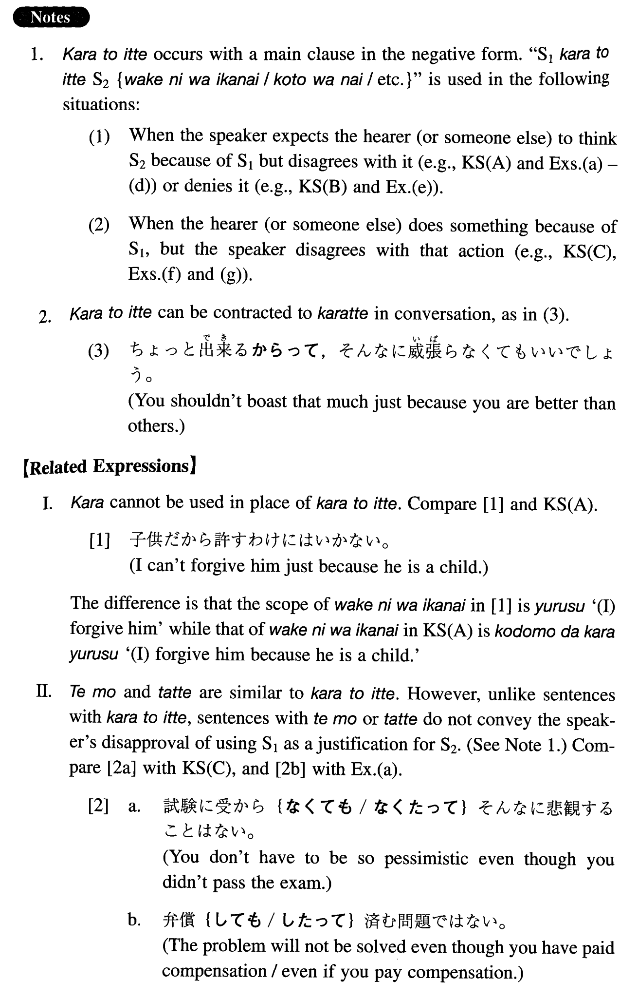

←
DoJG
→
からと言って
(I. 103)
Example sentences
(ksa).
子供だ
からと言って
許すわけにはいかない。
I cannot forgive him just because he is a child.
(ksb).
何も不平を言わない
からと言って
現状に満足しているわけではない。
Even though I don't complain, it doesn't mean that I'm satisfied with the present situation.
(ksc).
試験に受からなかった
からと言って
そんなに悲観することはない。
You don't have to be so pessimistic because you didn't pass the exam.
(a).
弁償した
からと言って
済む問題ではない。
It is not a problem which will be solved because you have paid / will pay compensation.
(b).
上司の命令だ
からと言って
黙って従うわけにはいかない。
I cannot obey the order without asking questions even if it is from my boss.
(c).
アメリカへ行った
からと言って
勝手に英語が上手になるものではない。
Your English will not improve (itself / automatically) even if you go to America.
(d).
毎日授業に出ている
からと言って
真面目に勉強していることにはならない。
Even though he goes to class every day, it doesn't mean that he is studying seriously.
(e).
こんなことを言う
からと言って
別に批判しているわけではない。
Even though I tell you such a thing, it doesn't mean that I'm criticizing you.
(f).
自分の問題じゃない
からと言って
知らん顔をしているのはよくない。
It's not right for you to be indifferent just because it's not your problem.
(g).
女だ
からと言って
侮ってはいけない。
Don't take her lightly just because she is a woman.
Formation
Sinformal
からと言って
高い
からと言って
Because/even if/even though it is expensive
